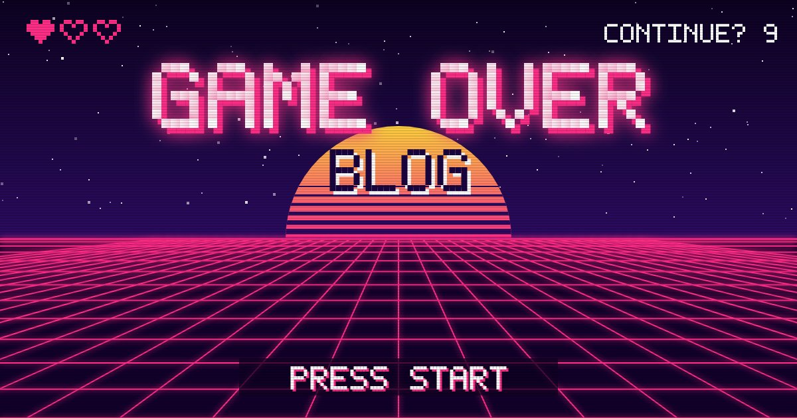

Game Over
Blog
Home
Blog
Sobre
Game Over Blog
Bem-vindo ao blog sobre games! Aqui você encontra novidades, análises e dicas.

Destaques
Prévia: GTA 6, o jogo mais esperado de 2026
Top 5 jogos indie para conhecer
Veja todos os posts do blog